Dubai After Dark
Entre gratte-ciels futuristes, beach clubs, désert doré et rooftops iconiques, Dubai mélange luxe moderne, lifestyle urbain et expériences spectaculaires.
Burj Khalifa • Marina • Palm Jumeirah • Desert Safari • Rooftops
Burj Khalifa, Dubai Mall et fontaines géantes au cœur de la ville moderne.
Dubai Marina et Palm Jumeirah offrent une ambiance lifestyle unique.
Safaris, dunes et couchers de soleil aux portes de la ville.
Le Dubai Metro relie facilement les principaux quartiers et attractions.
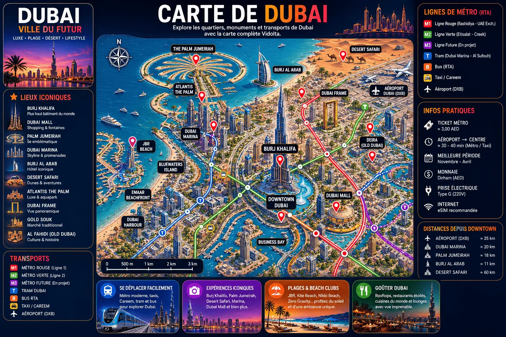
Le métro de Dubai permet de rejoindre Downtown, Marina et l’aéroport facilement.
ExplorerReste connecté partout aux Émirats avec une eSIM simple et rapide.
ExplorerDéplace-toi rapidement entre les quartiers grâce aux taxis et services premium.
ExplorerEntre rooftops spectaculaires, restaurants raffinés et soirées dans le désert, Dubaï offre des expériences culinaires aussi mémorables que ses panoramas.

Profite d'un dîner avec vue sur le Burj Khalifa illuminé et les célèbres fontaines de Dubaï. Une expérience parfaite pour célébrer un voyage en couple dans l'un des lieux les plus emblématiques de la ville.
Découvrir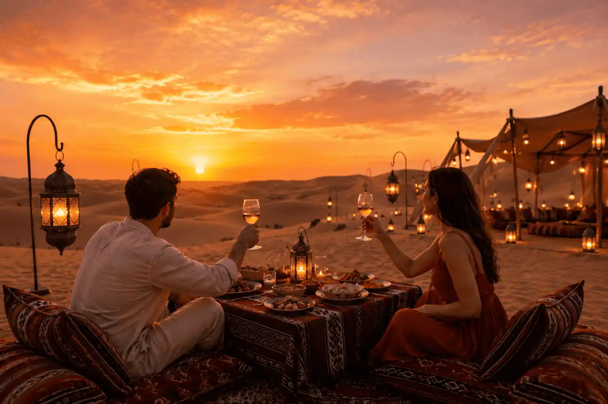
Loin des tours futuristes, découvre l'ambiance magique du désert. Entre dunes dorées, spectacles traditionnels et ciel étoilé, ce dîner reste l'une des expériences les plus authentiques de Dubaï.
DécouvrirInstalle-toi sur l'un des rooftops les plus réputés de Dubaï et admire la skyline s'illuminer lorsque le soleil disparaît derrière les gratte-ciels. Un moment incontournable pour les amateurs de panoramas.
DécouvrirEntre désert, ciel et mer, Dubaï propose certaines des expériences les plus spectaculaires du Moyen-Orient. Des dunes dorées aux panoramas aériens, chaque activité offre une nouvelle façon de découvrir la ville.
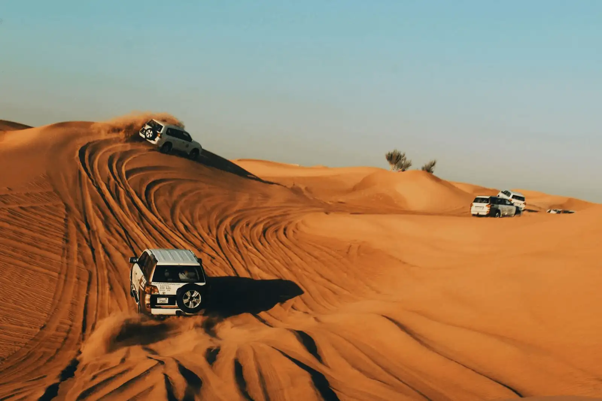
Traverse les dunes en 4x4, admire un coucher de soleil spectaculaire et découvre l'ambiance des camps bédouins lors de l'une des activités les plus emblématiques de Dubaï.
Découvrir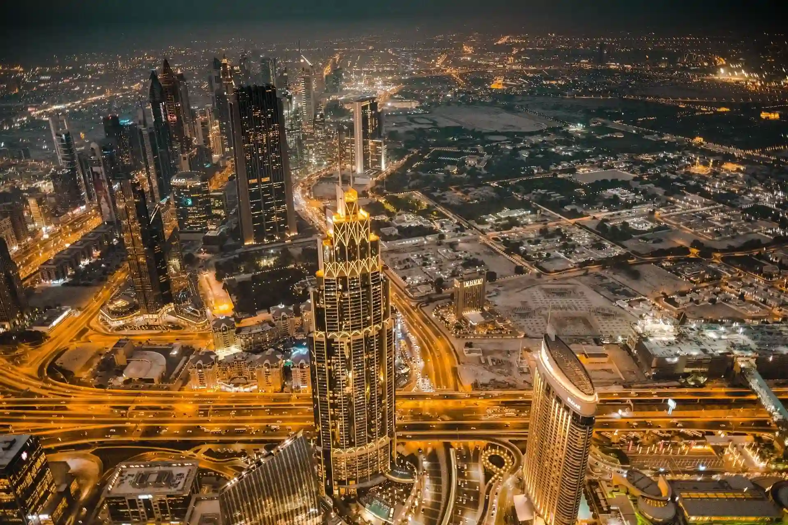
Prends de la hauteur et découvre Palm Jumeirah, Burj Khalifa et la marina depuis le ciel. Une expérience impressionnante pour admirer la démesure de Dubaï.
Découvrir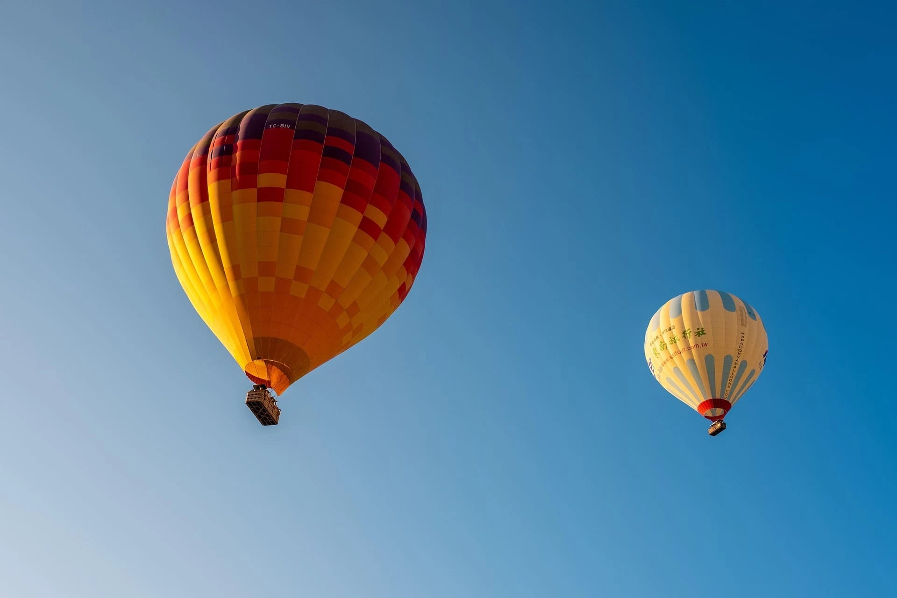
Survole les dunes au petit matin et profite d'une vue exceptionnelle sur le désert lorsque les premières lumières illuminent le paysage.
Découvrir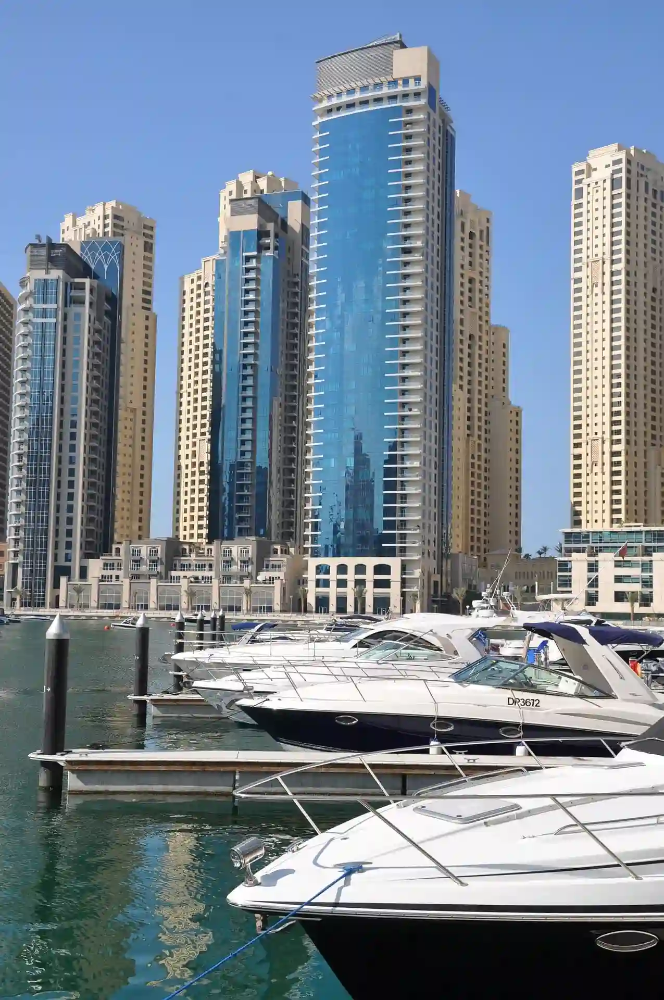
Navigue au cœur de la marina et découvre les gratte-ciels de Dubaï depuis l'eau lors d'une croisière de jour ou au coucher du soleil.
DécouvrirEntre désert, gratte-ciels et îles artificielles, Dubaï offre certains des panoramas les plus spectaculaires au monde. Ces lieux permettent d'admirer la ville sous ses plus belles lumières.
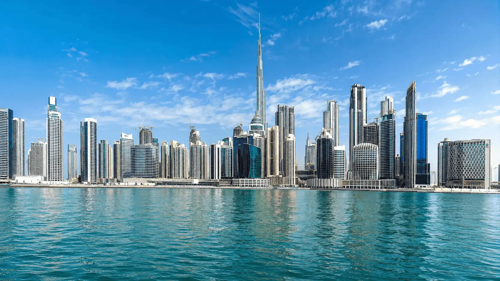
Lorsque le soleil disparaît derrière les dunes, le désert se transforme en un spectacle de couleurs unique. Une expérience incontournable lors d'un séjour à Dubaï.
DécouvrirAdmire l'île artificielle la plus célèbre de Dubaï et découvre sa forme spectaculaire depuis les observatoires et panoramas de Palm Jumeirah.
DécouvrirObserve Dubaï depuis le plus haut gratte-ciel du monde et admire la ville s'illuminer progressivement lorsque le jour laisse place à la nuit.
DécouvrirLes reflets des gratte-ciels sur l'eau et l'ambiance de la marina créent l'un des plus beaux panoramas urbains de Dubaï à la tombée du jour.
DécouvrirEntre skyline illuminée, croisières élégantes et panoramas spectaculaires, Dubaï offre de nombreuses expériences à partager à deux.
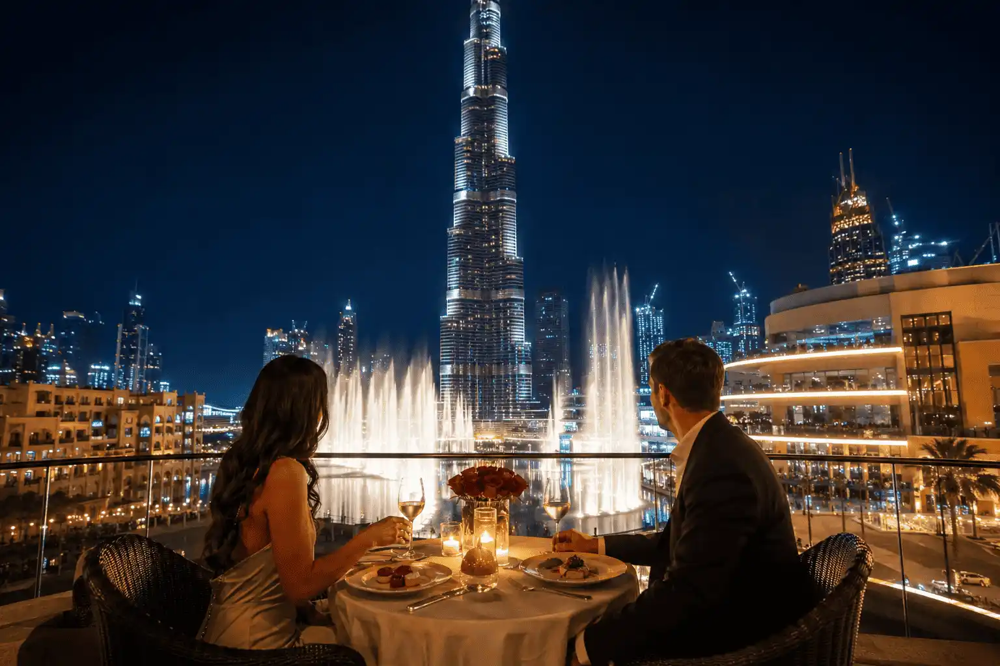
Profite d'une soirée romantique avec vue sur les célèbres fontaines et le Burj Khalifa illuminé. Une expérience incontournable pour les couples.
Découvrir
Navigue entre les gratte-ciels de Dubai Marina au coucher du soleil et admire les lumières de la ville depuis l'eau.
Découvrir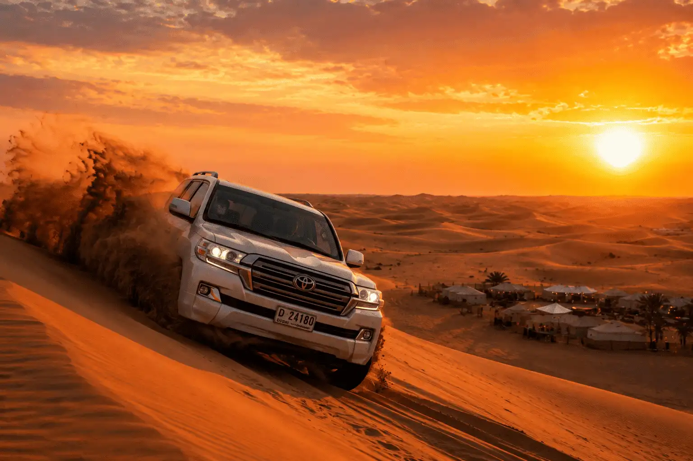
Éloigne-toi de l'agitation urbaine et découvre le calme du désert lors d'une soirée magique sous les étoiles.
DécouvrirCertaines expériences se vivent une fois dans une vie. Entre désert, gratte-ciels futuristes et panoramas spectaculaires, Dubaï offre certains des décors les plus impressionnants au monde.
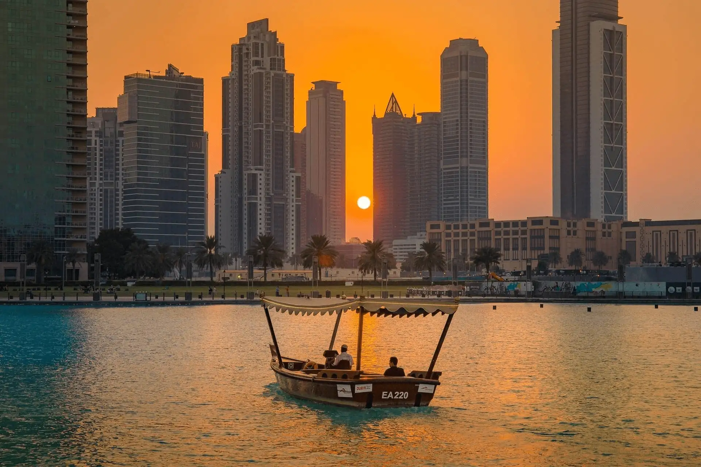
L'une des photos les plus emblématiques de Dubaï avec la célèbre île artificielle en forme de palmier.
La plus haute tour du monde illuminée au-dessus de la skyline de Dubaï.
Un monument spectaculaire offrant un cadrage unique entre le vieux et le nouveau Dubaï.
Les dunes dorées offrent certaines des plus belles images des Émirats arabes unis.
Entre compétitions internationales, expériences automobiles et grands événements, Dubaï propose un mélange unique de sport, de spectacle et d'adrénaline.
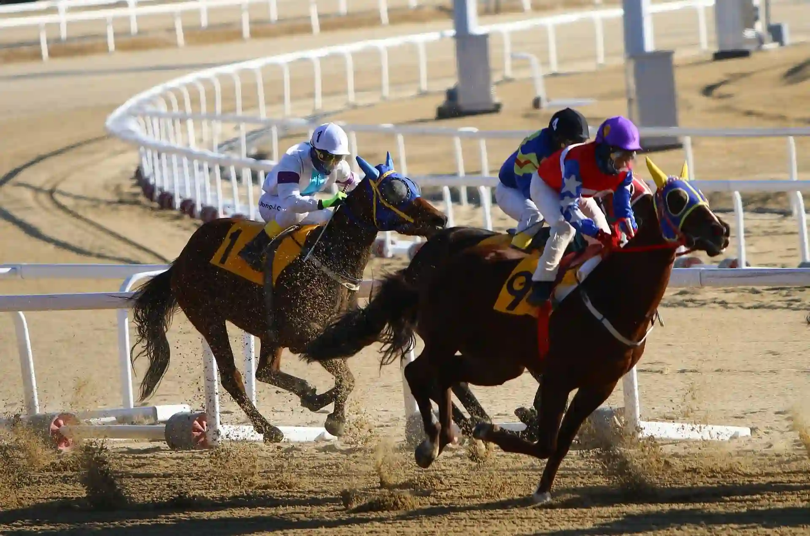
Découvre l'ambiance spectaculaire de l'hippodrome de Meydan, l'un des plus prestigieux au monde. Les courses attirent passionnés de sport, visiteurs internationaux et amateurs d'événements d'exception.
Voir les événements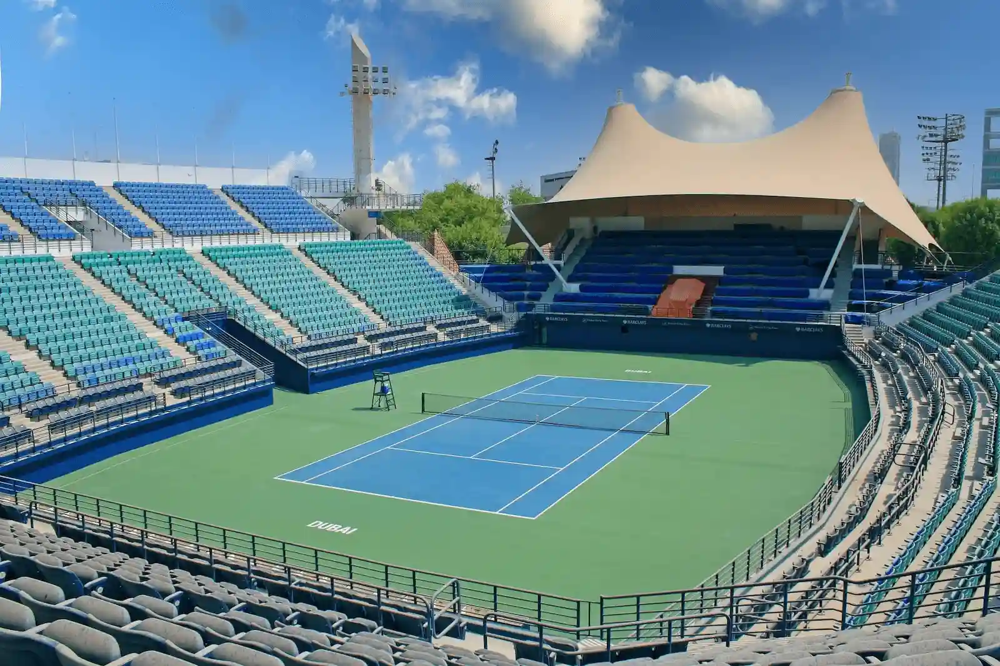
Chaque année, les meilleurs joueurs et joueuses du circuit mondial se retrouvent à Dubaï pour l'un des tournois les plus réputés du calendrier ATP et WTA.
Voir les billets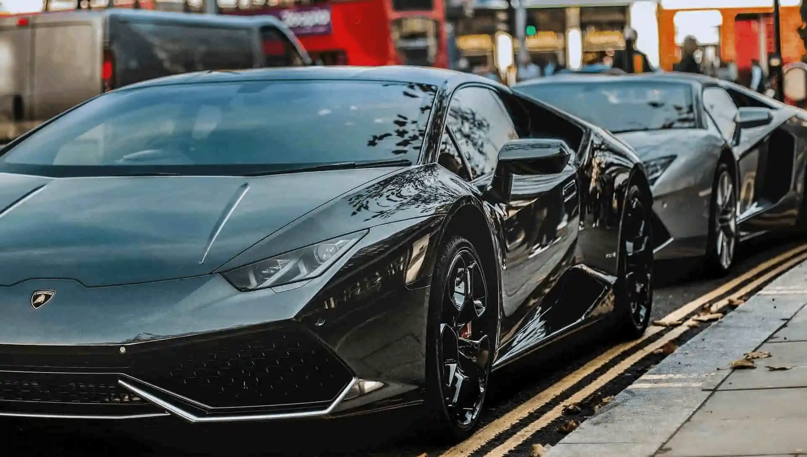
Prends le volant d'une Ferrari, Lamborghini ou McLaren et découvre pourquoi Dubaï est devenue l'une des capitales mondiales de l'automobile de prestige.
RéserverDes artistes internationaux aux grands spectacles de divertissement, Dubaï accueille tout au long de l'année des événements qui attirent des visiteurs du monde entier.
Voir les spectaclesDerrière les gratte-ciels et les centres commerciaux, Dubaï possède également une histoire, des traditions et un patrimoine qui permettent de découvrir une autre facette des Émirats arabes unis.

Promène-toi dans les ruelles du quartier historique d'Al Fahidi et découvre l'architecture traditionnelle qui rappelle le Dubaï d'avant les gratte-ciels.
Découvrir
Monte à bord d'une abra traditionnelle et traverse le Creek comme les habitants le font depuis des générations entre les souks historiques.
Découvrir
Avec son architecture spectaculaire et ses expositions immersives, le Musée du Futur est devenu l'un des symboles les plus emblématiques de Dubaï.
DécouvrirDubaï est une excellente base pour explorer les Émirats arabes unis. À moins de deux heures de route, découvre des mosquées grandioses, des montagnes, des réserves naturelles et des paysages totalement différents de la skyline de Dubaï.
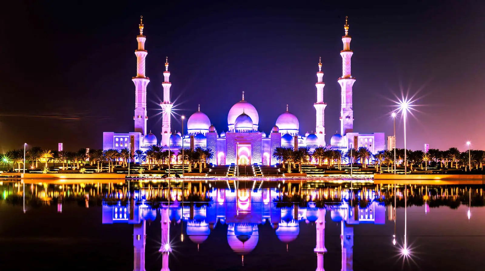
À seulement 1h30 de Dubaï, Abu Dhabi abrite la spectaculaire Grande Mosquée Cheikh Zayed, l'un des monuments les plus impressionnants du Moyen-Orient.
Découvrir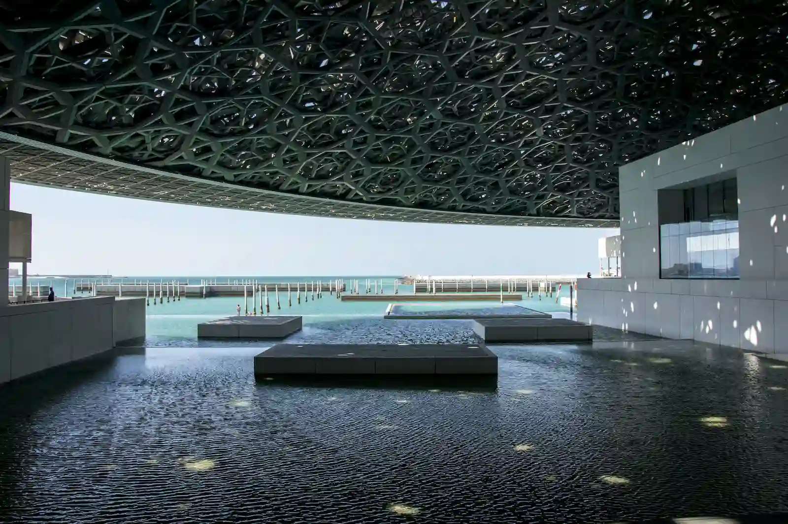
Son architecture spectaculaire et ses collections internationales en font l'un des musées les plus remarquables de la région.
Découvrir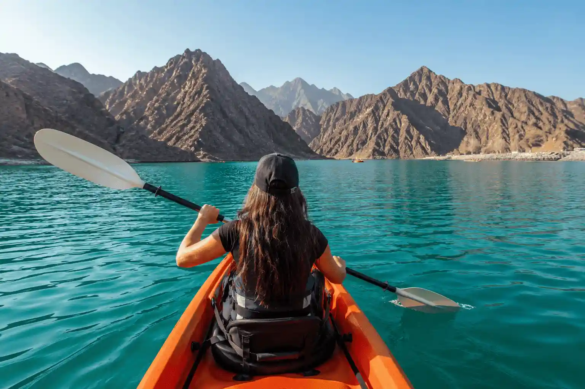
Entre montagnes, kayak et paysages rocheux, Hatta offre une facette totalement différente des Émirats loin des gratte-ciels de Dubaï.
Découvrir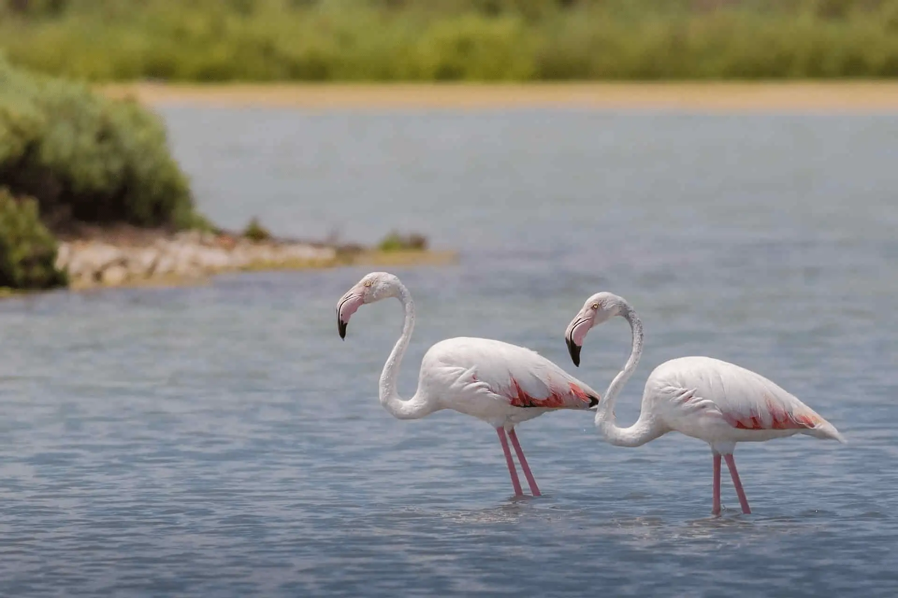
Cette réserve naturelle abrite des centaines de flamants roses avec en toile de fond la skyline futuriste de Dubaï.
DécouvrirEntre centres commerciaux gigantesques, quartiers tendances et expériences uniques, Dubaï est devenue l'une des capitales mondiales du shopping et du lifestyle.
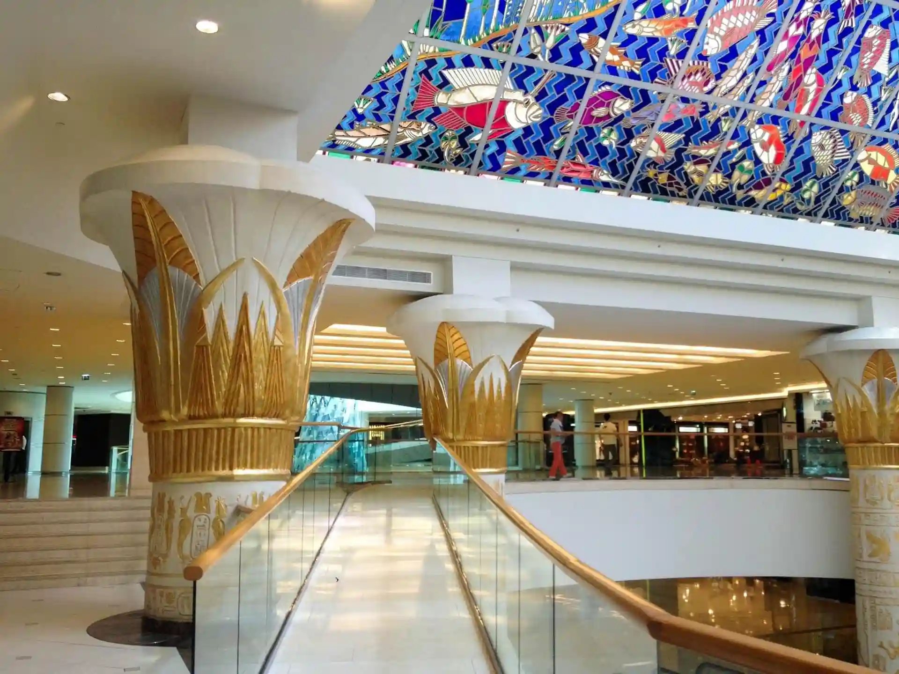
Avec plus de 1 200 boutiques, un immense aquarium, des restaurants et une vue directe sur le Burj Khalifa, Dubai Mall est l'un des lieux les plus visités au monde.
Explorer
Ce centre commercial est célèbre pour Ski Dubai, sa station de ski intérieure, ainsi que pour ses nombreuses boutiques internationales et son ambiance premium.
Explorer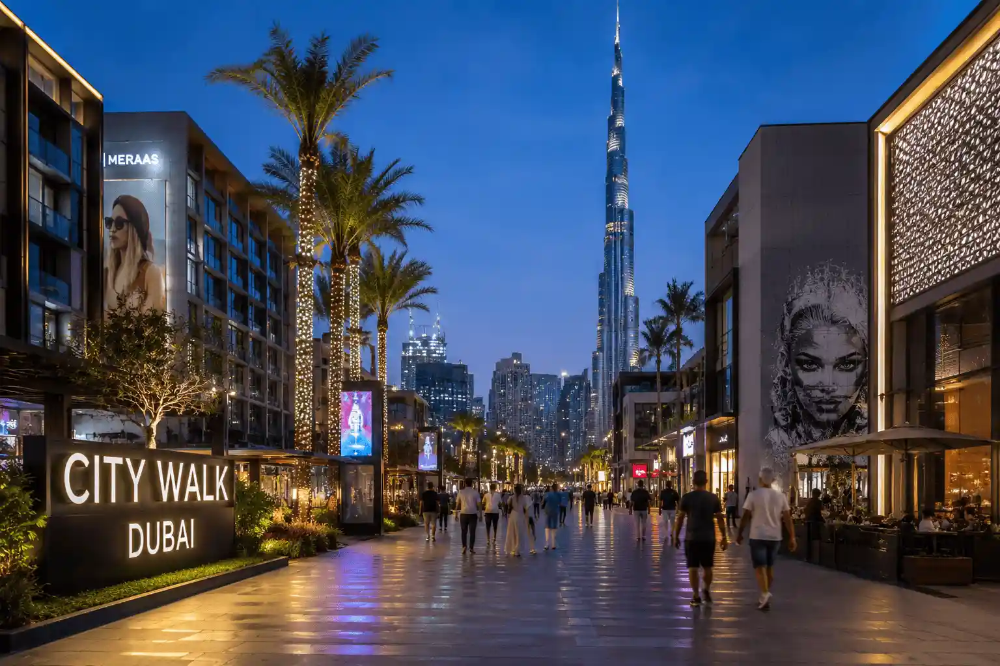
Entre boutiques tendance, restaurants en terrasse, art urbain et événements, City Walk est devenu l'un des quartiers lifestyle les plus populaires de Dubaï.
Explorer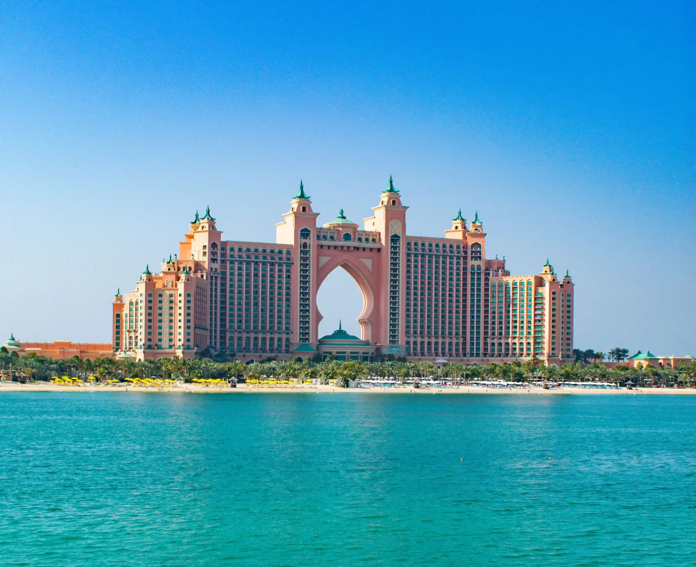
Hôtel emblématique de Palm Jumeirah, Atlantis combine resorts de luxe, restaurants réputés, expériences aquatiques et vues spectaculaires sur le golfe.
ExplorerDubai est devenue en quelques années l’une des destinations les plus spectaculaires au monde. Entre architecture futuriste, plages, désert et expériences premium, la ville offre un mélange unique entre modernité et lifestyle.
Downtown Dubai, Marina, Palm Jumeirah, Business Bay ou JBR possèdent chacun une ambiance différente. Dubai attire autant pour ses rooftops et beach clubs que pour son shopping, ses hôtels et sa vie nocturne.
Grâce à son métro moderne, ses infrastructures récentes et ses nombreuses activités, Dubai est aussi l’une des villes les plus accessibles pour un city-break haut de gamme.
Le Dubai Metro, les taxis et les applications comme Careem permettent de circuler facilement entre les principaux quartiers.
La période idéale se situe entre novembre et avril avec des températures plus agréables pour profiter des plages et activités.
Burj Khalifa, désert, Marina, Palm Jumeirah, Dubai Mall et beach clubs font partie des expériences incontournables.
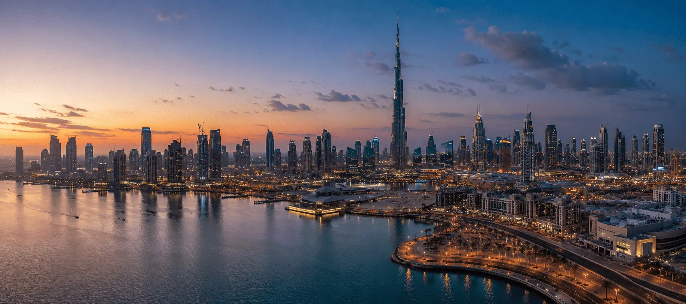
Entre gratte-ciels géants, rooftops modernes, plages artificielles et ambiance unique au Moyen-Orient, Dubai propose une expérience urbaine spectaculaire pensée pour le lifestyle et l’évasion.
Explorer les destinations →